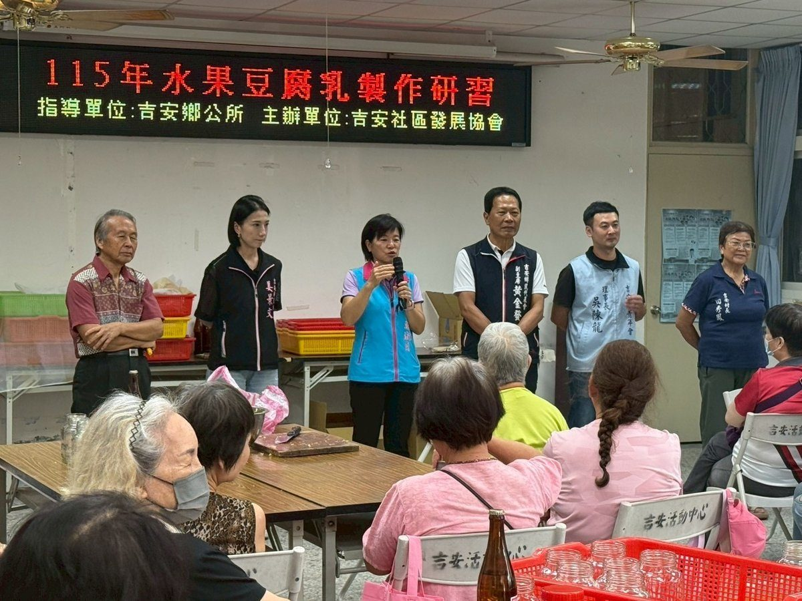

吉安社區研習 傳承水果豆腐乳好味道

可樂電子報小編/編輯
吉安鄉公所長期深耕社區發展工作，積極推動終身學習、食農教育及地方文化傳承，近年社區營造成果亮眼，屢獲中央及花蓮縣評鑑肯定。12日，吉安社區發展協會於吉安社區活動中心辦理「115年水果豆腐乳製作研習計畫」，吸引超過100位社區居民熱情參與。鄉長游淑貞除向鄉親分享吉安鄉近年社區發展成果，也鼓勵年輕家庭把握政府推動育兒及安家政策，提高生育意願，共同打造世代共融、安居樂業的幸福家園。
本次研習由吉安鄉公所指導，邀請具有豐富家政指導經驗、現任吉安社區發展協會理事長陳銀洲擔任講師，以香蕉、鳳梨等在地農產為特色，帶領居民學習水果豆腐乳製作技藝。活動現場互動熱絡，鄉親們一邊製作、一邊交流經驗、分享生活點滴，不僅提升生活技能，更增進居民彼此情誼，展現吉安鄉持續推動社區工作的具體成果。


吉安鄉公所表示，水果豆腐乳研習不僅是料理技藝的傳承，更是凝聚社區情感、活化在地農產的重要橋樑。未來將持續開辦多元社區課程，讓長輩與青年在同一張餐桌上交流，把吉安的農村滋味與人情味一代代傳下去，厚植鄉親對这片土地的認同與歸屬。